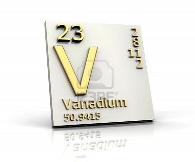

VANADIO:

Es un metal suave, de color gris plateado y de transición dúctil. La formación de una capa de óxido del metal estabiliza al elemento contra la oxidación. Andrés Manuel del Río descubrió el vanadio en 1801 mediante el análisis de los minerales de la vanadinita, y lo llamó Erythronium. Cuatro años más tarde, fue convencido por otros científicos que Erythronium era idéntico al cromo. El elemento fue redescubierto en 1831 por Nils Gabriel Sefström, quien lo llamó vanadio. Ambos nombres fueron atribuidos a la amplia gama de colores que se encuentran en los compuestos de vanadio.
 Ir a página principal
Ir a página principal